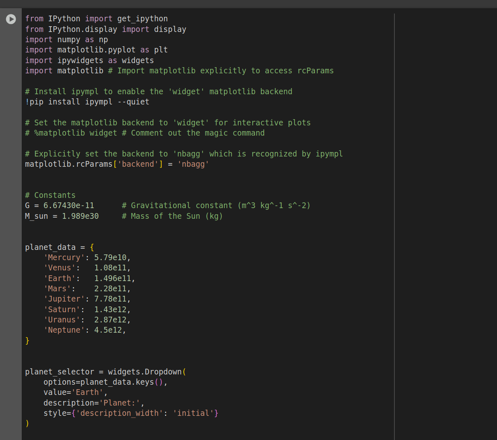
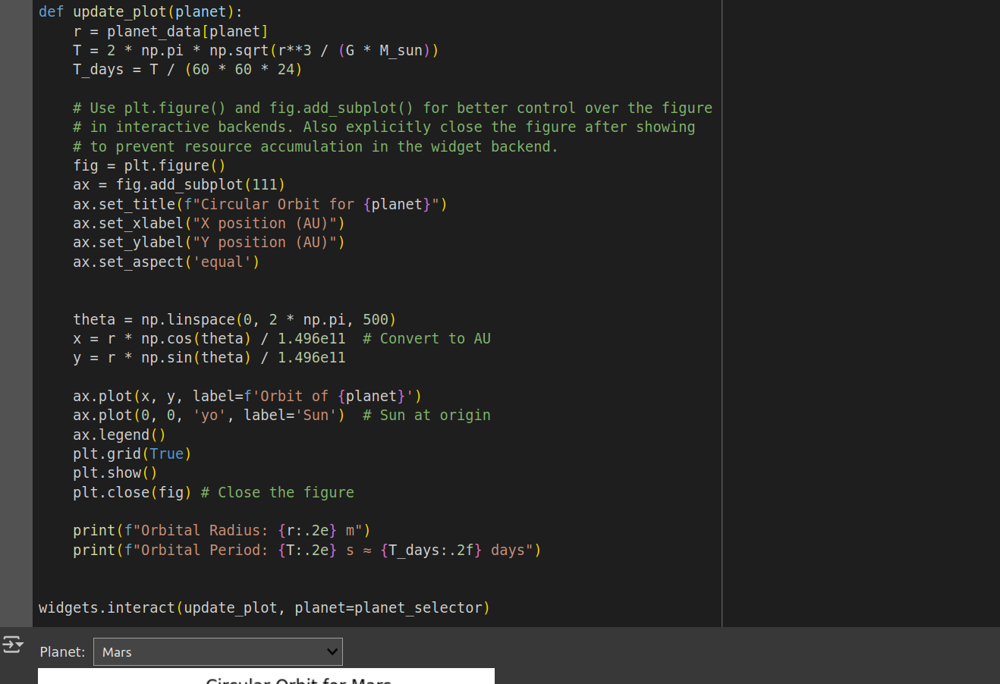
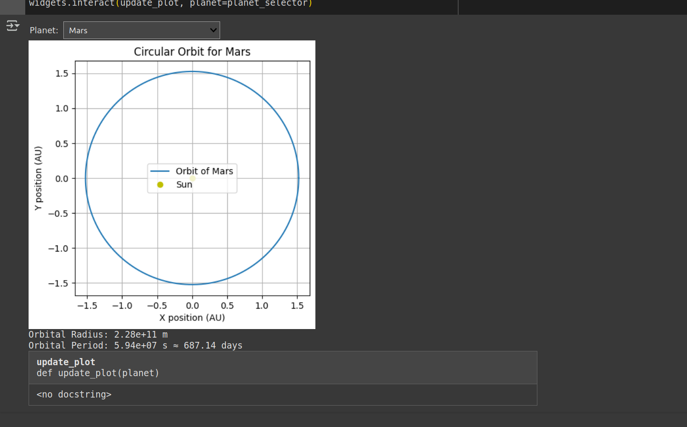

Gravity – Problem 1: Orbital Period and Orbital Radius
1. Derivation: Kepler’s Third Law for Circular Orbits
For a body of mass \( m \) in a circular orbit of radius \( r \) around a central mass \( M \), the gravitational force provides the centripetal force:
Setting these equal:
The orbital period \( T \) is the time to complete one orbit:
This gives Kepler’s Third Law:
2. Implications for Astronomy
- Mass Determination: Given \( T \) and \( r \), one can determine the mass of the central body using:
-
Distance Estimation: If \( T \) is known (e.g., from observation), \( r \) can be calculated, and vice versa.
-
Universal Application: Applies not just to planets but to moons, satellites, and binary stars (modulo elliptical corrections).
3. Real-World Examples
The Moon around Earth
- \( T = 27.3 \) days \( \approx 2.36 \times 10^6 \, \text{s} \)
- \( r \approx 3.84 \times 10^8 \, \text{m} \)
Compute Earth's mass using Kepler's law:
Planets in the Solar System
A plot of $$ \( \log(T^2) \) vs \( \log(r^3) \) $$ for planets will yield a straight line with slope ≈ 1, verifying the law.
5. Discussion: Beyond Circular Orbits
For elliptical orbits:
- Replace \( r \) with the semi-major axis \( a \).
- Kepler's law generalizes to:
- The law still holds, but more complex motion requires numerical simulations (e.g., Runge-Kutta integration).
- This generalization is crucial in characterizing exoplanets and binary star systems.
Conclusion
Kepler’s Third Law, derived from Newtonian mechanics, is a foundational result in celestial mechanics. It provides a direct connection between gravitational theory and observable planetary motion, allowing for:
- Mass and distance calculations.
- System architecture analysis.
- Extension to satellites, moons, and stars.
Simulations and real-world data confirm its accuracy and importance in astronomy.
  